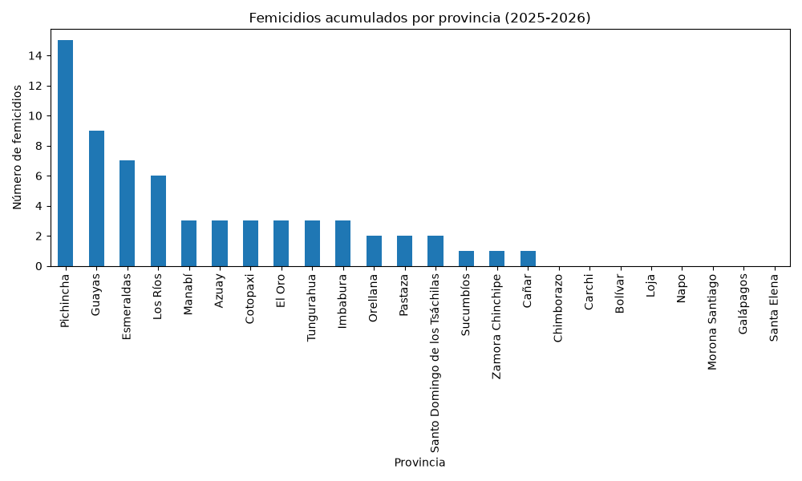
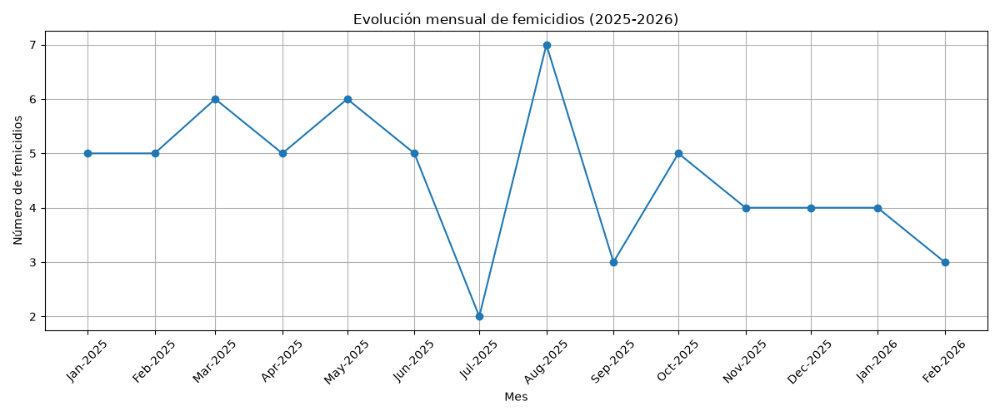
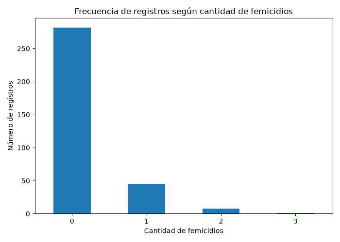

Análisis de Datos de Seguridad INEC 2025-2026
Índice
1. Análisis de Datos de Seguridad INEC
Este proyecto corresponde al trabajo final de semestre de la asignatura Arquitectura de Computadores.
El objetivo es realizar un análisis de información estadística obtenida desde los datos proporcionados por el Instituto Nacional de Estadística y Censos (INEC), aplicando herramientas computacionales para la extracción, procesamiento, análisis y visualización de datos.
2. Formulación del problema
Se desea realizar un análisis estadístico utilizando información proporcionada por el INEC relacionada con seguridad.
Para esto, se utiliza un conjunto de datos en formato Excel (.xlsx) que contiene información recopilada durante el año 2025 hasta febrero del 2026.
El objetivo es procesar los datos obtenidos, identificar patrones relevantes y representar los resultados mediante tablas y gráficos estadísticos utilizando Python.
3. Descripción del código
En esta sección se detallan los componentes principales del código desarrollado y la estrategia utilizada para resolver el problema.
3.1. Librerías utilizadas y carga inicial de datos
Durante el procesamiento de la información se utilizan las siguientes librerías:
- pandas
- numpy
- matplotlib
- seaborn
En esta etapa se carga la hoja del archivo Excel que contiene la información de femicidios por provincia proporcionada por el INEC.
import pandas as pd import numpy as np import matplotlib.pyplot as plt archivo = "../../Datos de Seguridad Ecuador.xlsx" df = pd.read_excel( archivo, sheet_name="3.femicidios_prov", header=3 ) # Eliminar columna vacía generada por el formato del Excel df = df.drop(columns=df.columns[0])
4. Exploración inicial de los datos
Antes de realizar el análisis se revisa la estructura del conjunto de datos para identificar sus variables y características principales.
print("Dimensiones del conjunto de datos:") print(df.shape) #Imprime las filas y columnas de los datos print("\nPrimeras filas del conjunto de datos:") print(df.head()) #Muestra las primeras filas del DataFrame (por defecto 5)
Dimensiones del conjunto de datos: (25, 147) Primeras filas del conjunto de datos: Provincia de ocurrencia 2014-01-01 00:00:00 2014-02-01 00:00:00 2014-03-01 00:00:00 ... 2025-11-01 00:00:00 2025-12-01 00:00:00 2026-01-01 00:00:00 2026-02-01 00:00:00 0 Azuay 0 0 0 ... 0 0 0 0 1 Bolívar 0 0 0 ... 0 0 0 0 2 Cañar 0 0 0 ... 0 1 0 0 3 Carchi 0 0 0 ... 0 0 0 0 4 Cotopaxi 0 0 0 ... 0 1 0 0 [5 rows x 147 columns]
4.1. Selección del periodo de análisis
Debido a que el archivo contiene información desde el año 2014 hasta 2026, se seleccionan únicamente los datos correspondientes al periodo enero 2025- febrero 2026 para el análisis.
# Seleccionar columnas correspondientes a los años 2025 y 2026 columnas_periodo = [ columna for columna in df.columns if "2025" in str(columna) or "2026" in str(columna) ] # Crear nuevo DataFrame con provincias y periodo seleccionado df_2025_2026 = df[["Provincia de ocurrencia"] + columnas_periodo] #Mostrar el número de filas y columas del nuevo dataframe print("Dimensiones del periodo seleccionado:") print(df_2025_2026.shape) #Mostrar los nombres de las columnas seleccionadas print("\nColumnas seleccionadas:") print(df_2025_2026.columns)
Dimensiones del periodo seleccionado:
(25, 15)
Columnas seleccionadas:
Index(['Provincia de ocurrencia', 2025-01-01 00:00:00,
2025-02-01 00:00:00, 2025-03-01 00:00:00,
2025-04-01 00:00:00, 2025-05-01 00:00:00,
2025-06-01 00:00:00, 2025-07-01 00:00:00,
2025-08-01 00:00:00, 2025-09-01 00:00:00,
2025-10-01 00:00:00, 2025-11-01 00:00:00,
2025-12-01 00:00:00, 2026-01-01 00:00:00,
2026-02-01 00:00:00],
dtype='object')
5. Procesamiento de datos
En esta etapa se realizan las transformaciones necesarias para preparar la información:
- Selección del periodo de análisis.
- Verificación de valores faltantes.
- Transformación del formato de los datos.
- Preparación de la información para el análisis estadístico.
print(df_2025_2026.head()) #Imprime las primeras filas del dataframe
Provincia de ocurrencia 2025-01-01 00:00:00 2025-02-01 00:00:00 2025-03-01 00:00:00 ... 2025-11-01 00:00:00 2025-12-01 00:00:00 2026-01-01 00:00:00 2026-02-01 00:00:00 0 Azuay 0 1 0 ... 0 0 0 0 1 Bolívar 0 0 0 ... 0 0 0 0 2 Cañar 0 0 0 ... 0 1 0 0 3 Carchi 0 0 0 ... 0 0 0 0 4 Cotopaxi 0 0 0 ... 0 1 0 0 [5 rows x 15 columns]
5.1. Tratamiento de valores faltantes
Se revisa la existencia de valores faltantes dentro del conjunto de datos seleccionado.
print(df_2025_2026.isnull().sum().sum()) #Cuenta valores nulos o vaciós en el dataframe
0
5.2. Transformación de datos
La información obtenida desde el Excel se encuentra en formato ancho, donde cada mes corresponde a una columna. Para facilitar el análisis y la generación de gráficos se transforma a un formato donde cada fila representa una observación mensual.
# Transformación de formato ancho a formato largo df_largo = df_2025_2026.melt( #Transforma formado ando a largo (columnas a filas) id_vars=["Provincia de ocurrencia"], var_name="Fecha", value_name="Femicidios" ) # Convertir la columna fecha a formato fecha df_largo["Fecha"] = pd.to_datetime(df_largo["Fecha"]) #Convierte Fecha de texto a formado fecha pandas print("Dimensiones del nuevo conjunto de datos:") print(df_largo.shape) print("\nPrimeras filas:") print(df_largo.head())
Dimensiones del nuevo conjunto de datos: (350, 3) Primeras filas: Provincia de ocurrencia Fecha Femicidios 0 Azuay 2025-01-01 0 1 Bolívar 2025-01-01 0 2 Cañar 2025-01-01 0 3 Carchi 2025-01-01 0 4 Cotopaxi 2025-01-01 0
6. Análisis estadístico
El análisis se realiza utilizando el conjunto de datos transformado (dflargo), donde cada fila representa el número de femicidios registrado para una provincia en un mes determinado.
6.1. Eliminación de registros agregados
El conjunto de datos contiene un registro correspondiente al Total Nacional, el cual representa la suma de todas las provincias. Debido a que el análisis se realizará a nivel provincial, este registro es eliminado para evitar distorsionar los resultados estadísticos.
#Elimina filas donde la columna de la provincia es 'Total Nacional' df_largo = df_largo[ df_largo["Provincia de ocurrencia"] != "Total Nacional" ] #Obtiene el numero de provincias únicas que uqedan print("Número de provincias analizadas:") print(df_largo["Provincia de ocurrencia"].nunique())
Número de provincias analizadas: 24
6.2. Estadísticas descriptivas
Se calculan medidas estadísticas descriptivas para conocer la distribución general de los casos registrados.
estadisticos = ( df_largo["Femicidios"] .describe() #Genera estadísticas descriptivas automáticamente .reset_index() #Convierte el objeto que toma los valores como índices en una tabla ) estadisticos.columns = ["Medida", "Valor"] #Cambia nombres de las columnas #Prepara los datos para mostrarlos como tabla en un Org-mode table = [list(estadisticos.columns)] + [None] + estadisticos.values.tolist() table
| Medida | Valor |
|---|---|
| count | 336.0 |
| mean | 0.19047619047619047 |
| std | 0.46938996233925495 |
| min | 0.0 |
| 25% | 0.0 |
| 50% | 0.0 |
| 75% | 0.0 |
| max | 3.0 |
6.3. Total de femicidios por provincia
Para identificar las provincias con mayor cantidad de casos durante el periodo analizado se realiza una agrupación por provincia.
femicidios_provincia = ( df_largo.groupby("Provincia de ocurrencia")["Femicidios"] #Agrupa los datos por provincia .sum() #Suma los valores de cada provincia .sort_values(ascending=False) #Ordena de mayor a menor ) print(femicidios_provincia)
Provincia de ocurrencia Pichincha 15 Guayas 9 Esmeraldas 7 Los Ríos 6 Manabí 3 Azuay 3 Cotopaxi 3 El Oro 3 Tungurahua 3 Imbabura 3 Orellana 2 Pastaza 2 Santo Domingo de los Tsáchilas 2 Sucumbíos 1 Zamora Chinchipe 1 Cañar 1 Chimborazo 0 Carchi 0 Bolívar 0 Loja 0 Napo 0 Morona Santiago 0 Galápagos 0 Santa Elena 0 Name: Femicidios, dtype: int64
6.4. Estadísticos por provincia
A partir del total de femicidios registrados por provincia se calculan medidas descriptivas para resumir el comportamiento de los datos.
estadisticos_provincia = ( femicidios_provincia .describe() #Obtiene estadísticas descriptivas .reset_index() #Transforma el resultado a un dataframe ) estadisticos_provincia.columns = ["Medida", "Valor"] #Crea tabla compatible con ORG table = [list(estadisticos_provincia)] + [None] + estadisticos_provincia.values.tolist() table
| Medida | Valor |
|---|---|
| count | 24.0 |
| mean | 2.6666666666666665 |
| std | 3.546788708807946 |
| min | 0.0 |
| 25% | 0.0 |
| 50% | 2.0 |
| 75% | 3.0 |
| max | 15.0 |
6.5. Evolución mensual de femicidios
Se agrupan los datos por mes para observar el comportamiento temporal durante el periodo seleccionado.
femicidios_mes = ( df_largo.groupby("Fecha")["Femicidios"] #Agrupa filas que pertenezcan al mismo mes .sum() #Suma los valores ) print(femicidios_mes)
Fecha 2025-01-01 5 2025-02-01 5 2025-03-01 6 2025-04-01 5 2025-05-01 6 2025-06-01 5 2025-07-01 2 2025-08-01 7 2025-09-01 3 2025-10-01 5 2025-11-01 4 2025-12-01 4 2026-01-01 4 2026-02-01 3 Name: Femicidios, dtype: int64
6.6. Frecuencia de registros por cantidad de femicidios
Se analiza la frecuencia de los valores registrados para observar la distribución de los casos.
# Frecuencia de la cantidad de femicidios registrada, cuenta el número de veces que aparece cada valor, ordena utilizando el índice print(df_largo["Femicidios"].value_counts().sort_index())
Femicidios 0 282 1 45 2 8 3 1 Name: count, dtype: int64
6.7. Preparación de datos para visualización
Se generan estructuras resumidas que serán utilizadas posteriormente para la creación de gráficos estadísticos.
print("Datos preparados:") print("Provincias analizadas:", len(femicidios_provincia)) #Cuenta el número de provincias analizadas print("Meses analizados:", len(femicidios_mes)) #Cuenta el número de meses analizados
Datos preparados: Provincias analizadas: 24 Meses analizados: 14
7. Presentación de resultados
En esta sección se presentan los principales resultados obtenidos a partir del análisis estadístico realizado sobre los datos de femicidios registrados por provincia durante el periodo 2025-2026.
7.1. Muestra aleatoria de datos
Se presenta una muestra aleatoria de los datos procesados después de la transformación al formato largo.
#Selecciona filas aleatorias de df_largo y crea una copia tabla_muestra = df_largo.sample(10).copy() #astype: Convierte la fecha a texto, toma solo los 10 primero caracteres del texto tabla_muestra["Fecha"] = tabla_muestra["Fecha"].astype(str).str[:10] table = [list(tabla_muestra)] + [None] + tabla_muestra.values.tolist() table
| Provincia de ocurrencia | Fecha | Femicidios |
|---|---|---|
| Galápagos | 2026-02-01 | 0 |
| Azuay | 2025-10-01 | 0 |
| Carchi | 2025-12-01 | 0 |
| Santa Elena | 2025-09-01 | 0 |
| Manabí | 2025-07-01 | 0 |
| Sucumbíos | 2025-04-01 | 0 |
| Galápagos | 2025-07-01 | 0 |
| Napo | 2025-11-01 | 0 |
| Zamora Chinchipe | 2025-10-01 | 0 |
| Imbabura | 2025-02-01 | 0 |
7.2. Provincias con mayor cantidad de femicidios registrados
tabla_provincias = ( femicidios_provincia #Datos ya ordenados previamente .head(10) #Toma las diez primeras provincias .reset_index() #Convierte los valores para usarse en tabla normal ) table = [list(tabla_provincias)] + [None] + tabla_provincias.values.tolist() table
| Provincia de ocurrencia | Femicidios |
|---|---|
| Pichincha | 15 |
| Guayas | 9 |
| Esmeraldas | 7 |
| Los Ríos | 6 |
| Manabí | 3 |
| Azuay | 3 |
| Cotopaxi | 3 |
| El Oro | 3 |
| Tungurahua | 3 |
| Imbabura | 3 |
7.3. Femicidios acumulados por provincia
La siguiente gráfica permite observar la distribución de los casos acumulados de femicidio por provincia durante el periodo analizado.
plt.figure(figsize=(10,6)) #Crea el espacio gráfico femicidios_provincia.plot(kind="bar") #Crea el gráfico de barras plt.title("Femicidios acumulados por provincia (2025-2026)") #Agrega título plt.xlabel("Provincia") #Etiqueta los ejes plt.ylabel("Número de femicidios") #Gira las etiquetas del eje x 90 grados plt.xticks(rotation=90) #Ajusta los márgenes del gráfico plt.tight_layout() #Guarda la imagen archivo="./images/femicidios_provincia.png" plt.savefig(archivo) plt.close() archivo

7.4. Evolución mensual de femicidios
La siguiente gráfica muestra la variación mensual de los casos registrados durante el periodo seleccionado.
plt.figure(figsize=(12,5)) #Crea el tamaño de la figura #Crea el gráfico de líneas plt.plot( femicidios_mes.index, #Eje x : Fechas femicidios_mes.values, #Eje y : Valores de femicidios por mes marker="o" #Agrega un punto circular en cada dato ) #Títulos y Etiquetas de ejes plt.title("Evolución mensual de femicidios (2025-2026)") plt.xlabel("Mes") plt.ylabel("Número de femicidios") # Mostrar todos los meses plt.xticks( femicidios_mes.index, #Indica donde colocar las etiquetas del eje x [fecha.strftime("%b-%Y") for fecha in femicidios_mes.index], #Transforma las fechas al formato Mes-Año rotation=45 ) #Agrega cuadrícula plt.grid() #Ajusta los espacios plt.tight_layout() #Guarda la imagen archivo="./images/evolucion_mensual_femicidios.png" #Guarda el gráfico como imagen plt.savefig(archivo) plt.close() archivo

7.5. Frecuencia de registros según cantidad de femicidios
La gráfica representa la frecuencia con la que aparecen diferentes cantidades de femicidios en los registros mensuales por provincia.
#Calcula la frecuencia de cada valor: cuenta y ordena frecuencia = df_largo["Femicidios"].value_counts().sort_index() #Crea el espacio del gráfico plt.figure(figsize=(7,5)) #Crea el gráfico de barras frecuencia.plot(kind="bar") #Etiquetas de la gráfica plt.title("Frecuencia de registros según cantidad de femicidios") plt.xlabel("Cantidad de femicidios") plt.ylabel("Número de registros") #Mantiene los valores del eje x horizontales plt.xticks(rotation=0) #Ajusta el diseño plt.tight_layout() #Guarda la imagen archivo="./images/frecuencia_femicidios.png" #Cierra el gráfico plt.savefig(archivo) plt.close() archivo

7.6. Interpretación de los datos
- Interpretación de estadísticas descriptivas generales: El análisis descriptivo realizado sobre los registros mensuales pro provincia muestra que durante el periodo 2025-2026 se analizaron 336 observaciones, correspondientes a 24 provincias y 14 meses. El promedio obtenido fue de 0.19 femicidios por provincia-mes, esto indica que la ocurrencia de estos eventos dentro de una unidad específica de análisis es baja. La desviación estándar de 0.47 evidencia una dispersión reducida de los datos alrededor del promedio. Además, los valores correspondientes al primer, segundo y tercer cuartil son iguales a cero, indicando que al menos el 75% de los registros mensuales por provincia no demuestran casos registrados. El valor máximo observado fue de 3 femicidios en una provincia durante un mes determinado, mostrando que, aunque la mayoría de registros presentan valores bajos, existen periodos específicos con concentraciones en mayores casos.
- Interpretación por provincia: Al analizar la distribución acumulada por provincia se observa que los registros no se distribuyen uniformemente en el territorio nacional. Pichincha concentra la mayor cantidad de casos con 15 registros, seguida de Guayas con 9 casos y Esmeraldas con 7. La diferencia entre el valor máximo y el valor mínimo evidencia una variabilidad importante entre provincias. Algunas provincias no registraron casos durante el periodo analizado, mientras que otras presentan una mayor concentración de eventos. Los estadísticos calculados por provincia muestran una media de 2.67 casos y una mediana de 2 casos, lo que indica que la mitad de las provincias presentan valores iguales o inferiores a dos registros durante periodo.
- Interpretación Temporal: El análisis temporal permite observar la evolución mensual de los femicidios registrados. Durante el periodo estudiado los valores mensuales presentan fluctuaciones moderadas, sin una tendencia creciente o decreciente claramente definida. El mayor número de casos se registró en agosto de 2025 con 7 femicidios, mientras que julio presentó el menor valor con 2 casos. Estas variaciones muestran que la ocurrencia de estos eventos presenta cambios entre meses, pero debido al tamaño del periodo analizado no es posible establecer una tendencia histórica.
- Interpretación de la frecuencia: La distribución de la frecuencia evidencia que la mayoría de observaciones corresponden a meses y provincias sin registros de femicidio. De las 336 observaciones analizadas, 282 presentan un valor de cero, mientras que únicamente 54 registros presentan uno o más casos. Este comportamiento explica por qué las medidas descriptivas presentan valores bajos y demuestra que los femicidios corresponden a eventos de baja frecuencia cuando se analizan individualmente por provincia y mes
- Conclusión General En conjunto, el análisis estadístico permitió identificar varios factores relevantes en los registros de femicidios del Ecuador durante el periodo 2025-2026. Los resultados muestran una concentración de casos en determinadas provincias, principalmente Pichincha y Guayas, mientras que gran parte de las provincias presentan valores reducidos o nulos. El análisis descriptivo evidencia que la mayoría de registros mensuales no presentan casos, por lo que las medidas como la media y los cuartiles reflejan una distribución con alta presencia de valores cero. Sin embargo, los valores máximos observados muestran la existencia de periodos específicos con mayor concentración de casos.